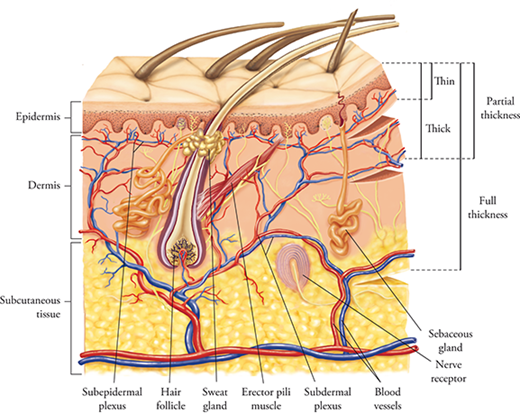

Skin grafting is a fundamental surgical procedure in reconstructive and burn medicine, defined by the transfer of cutaneous tissue from a healthy donor site to a compromised recipient site without its own intact blood supply. Unlike a tissue flap, which retains a vascular pedicle, a skin graft relies entirely on the recipient wound bed for its survival, nourishment, and ultimate integration.
Clinical skin grafts are primarily categorized by their anatomical thickness, which heavily dictates their metabolic demand, survival rate, and cosmetic outcome. The selection between different graft thicknesses depends on the depth of the wound, the vascularity of the wound bed, and the availability of donor sites.

As illustrated in Fig iii, a Split-Thickness Skin Graft (STSG) harvests the entire epidermis and only a superficial portion of the dermis. Because STSGs have a lower metabolic demand, they exhibit a significantly higher success rate of "take" in heavily compromised wound beds. Furthermore, the donor site can spontaneously regenerate via remaining dermal appendages, allowing the same site to be harvested multiple times in severe burn cases.
Conversely, a Full-Thickness Skin Graft (FTSG) encompasses the epidermis and the entire depth of the dermis. While FTSGs require a highly vascularized, sterile wound bed to survive due to their high metabolic demand, they provide superior cosmetic outcomes, maintain natural skin texture, and resist secondary contracture, making them ideal for facial and joint reconstruction.
Regardless of the thickness utilized, the biological integration of a skin graft, clinically referred to as "graft take," occurs in three distinct, chronological physiological phases. The success or failure of the procedure is entirely dependent on the uninterrupted progression of these stages.
The initial phase, plasmatic imbibition, occurs within the first 24 to 48 hours. During this period, the completely ischemic graft survives by passively absorbing wound exudate, serum, and nutrients via capillary action from the recipient bed. This keeps the tissue viable while cellular connections begin to form. The second phase, inosculation, begins around day three. During this critical window, the severed capillaries of the graft physically align and connect with the capillary network of the recipient wound bed, establishing preliminary blood flow. Finally, neovascularization (angiogenesis) occurs, characterized by the active ingrowth of new blood vessels into the graft, ensuring permanent vascular supply and structural adherence.
In major burn trauma, securing adequate donor skin is a severe limiting factor. When a patient sustains burns covering a vast percentage of their Total Body Surface Area (TBSA), surgeons must maximize the utility of the scarce remaining healthy skin. To achieve this, harvested split-thickness grafts are subjected to a process known as meshing. A skin mesher is a surgical device that cuts multiple, staggered, parallel slits into the harvested tissue. This mechanical alteration allows the graft to be stretched and expanded to cover a wound area up to nine times larger than the original donor site.
Beyond expanding the surface area, meshing serves a critical biological function: the fenestrations allow underlying blood, serum, and inflammatory exudate to drain freely. If fluid accumulates beneath a solid, unmeshed graft, it creates a physical barrier that prevents inosculation, leading to graft ischemia and necrosis.
Despite advancements in surgical technique, graft failure remains a significant clinical challenge. The primary etiologies of graft rejection or failure include hematoma and seroma formation, shearing forces (mechanical disruption of the fragile new capillary connections), and bacterial infection, which provokes severe inflammatory responses that actively degrade the graft matrix. The intrinsic limitations of traditional grafting have catalyzed the modern transition toward bioengineered skin substitutes and cellular therapies to manage severe wounds.